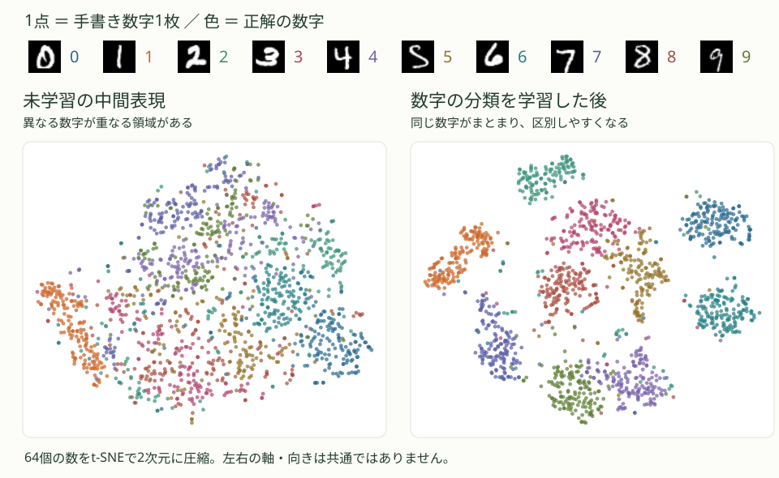

横断的な研究を知る · Representation Learning
表現学習
手書き数字が表現の中で分かれる様子から、学習目的が特徴をどう変えるかを説明します。帰納バイアス・対称性・不変性・同変性も図で比べます。
表現学習の基本
手書きの「5」は、人によって線の太さや傾きが違います。それでも数字を読み取るには、書き方の違いを越えて「5に共通する形」を捉える必要があります。表現学習は、このように入力から役立つ情報を取り出す変換を、データから学ぶことです。
画像を入力したニューラルネットワークの中間層には、数の並びが得られます。これを特徴表現と呼びます。数の並びをベクトル、対象をベクトルで表すことを埋め込みと呼びます。一つの数が必ず「線の太さ」のような意味を持つわけではなく、数の組合せとして情報を表します。
特徴表現：手書き数字が分かれていく
MNISTは、0〜9の手書き数字を集めたデータセットです。1枚は28×28画素、つまり784個の数で表されます。ここでは、画像を64個の数へ変換する中間層を持つモデルに、数字を当てる学習をさせました。
下の図は、同じ1,500枚のテスト画像を、学習の前後で中間層に通した結果です。1点が1枚の画像、色が正解の数字を表します。64個の数をそのまま紙面には描けないので、近い表現の点が近くに見えるように、t-SNEという方法で2次元へ圧縮しています。

教材用に実際に学習・計算した結果。色は正解ラベルを使って後から付けています。左右は別々に2次元化しているため、点の移動方向や塊どうしの距離を直接比較する図ではありません。データ：MNIST / CVDF。
学習後は同じ数字の点が集まり、異なる数字を区別しやすい配置になっています。分類の学習は、最後の答えだけでなく、途中で画像をどう表すかも変えます。 ただし、2次元の図だけで分類性能は判断できず、すべての画像が完全に分かれるわけでもありません。
図の計算条件
MNISTの訓練画像から無作為に選んだ15,000枚を使い、784入力 → 64中間ユニット（ReLU）→ 10クラスのMLPを20エポック学習しました。エポックは訓練用の全画像を一巡する単位です。図は訓練に使っていないテスト画像から各数字150枚を選んだものです。t-SNEには正解ラベルを渡していません。左右ともperplexityは30、乱数シードは42です。初期状態にも、入力画像の似た形によるまとまりはあります。
学習目的は、表現に残る情報を変える
モデルに「よい特徴を見つけて」と言うだけでは、何を残せばよいか決まりません。そこで、何ができたら成功かを学習目的として決めます。答えと目標のずれを数値にしたものが損失です。損失が小さくなるように重みを更新すると、その課題に役立つ情報を取り出す変換が学ばれます。
同じ「5」の画像でも、数字を答える課題と、画像を描き直す課題では、必要な情報が違います。
分類：数字を区別する情報を残す
画像と正解ラベル「5」を与え、5と答える確率が高くなるように学習します。中間表現にも、3や6と区別するための形の情報が必要になります。一方、同じ5なら筆跡を細部まで再現する必要はありません。最初のMNISTの図は、この学習で得た表現です。画像を特徴表現に変える部分をエンコーダ、表現から数字を予測する部分を分類器と呼びます。
対照学習：同じ画像の見え方の違いを小さくする
例えば、1枚の画像から少し位置や傾きを変えた2枚を作り、その表現を近づけます。同時に、ほかの画像の表現とは離すことで、すべてを同じベクトルにするだけの解を避けます。数字の正解ラベルを使わずに、変形しても共通する形を捉えさせる方法です。
ここで「同じ」と教えるのは、同じ元画像から作った2枚です。別々に書かれた5どうしを、正解ラベルで直接まとめるわけではありません。また、変形は数字の意味を保つ範囲で選びます。6が9に見えるような回転まで同じと扱うと、分類に必要な違いを消してしまいます。
再構成：元の画像を描き直せる情報を残す
AE（オートエンコーダ）は、画像を小さな表現に圧縮するエンコーダと、その表現から画像を戻すデコーダを学びます。復元画像と入力画像の画素のずれを小さくすることが目的です。
「5」と分かるだけでは、元と同じ画像には戻せません。線の太さ、傾き、位置なども再構成には必要です。そのため、復元が上手な表現が、数字を分類するのにも最適とは限りません。どんな情報を残したいかに合わせて、学習目的を選びます。
帰納バイアス：どんな規則を学びやすくするか
中央に書かれた5を何枚か見ただけでは、右端の5も同じ数字だと分かるとは限りません。見た例だけなら、「形で判断する規則」も「中央にあるときだけ5とする規則」も、同じ答えを出せるからです。
そこで、モデルの構造や学習方法に、ある種類の規則を選びやすくする傾向を持たせます。これを帰納バイアスと呼びます。学習で得た例から、まだ見ていない例へ判断を広げるときの手がかりになります。
訓練例だけでは決まらない
見た例に合う規則は一つとは限りません。
どんな規則を選びやすくするか
同じ形を別の場所でも見つけやすい構造が、判断を広げる手がかりになります。
CNNは、局所的な模様を調べる同じフィルタを、画像のさまざまな位置で使います。そのため、ある場所で役立った形の検出方法を、別の場所にも使えます。これが構造に組み込んだ帰納バイアスの例です。画像を少しずらして同じラベルを与えるデータ拡張でも、位置によらず数字を判断するよう学習を促せます。
帰納バイアスは学ぶ助けになりますが、課題に合う必要があります。文字の位置そのものを予測したい場合には、位置の情報をすべて捨ててはいけません。
補足：不変性・同変性とグラフの並べ替え
対称性・不変性・同変性
数字を画像の中で少し移動しても、何の数字かは変わりません。このように、変換しても、注目している性質や構造が保たれることを対称性と呼びます。ここでは画像が左右対称という意味ではなく、「位置を移しても数字の意味が保たれる」という関係を指します。
その変換に対して、モデルの出力をどう振る舞わせるかには、次の違いがあります。
不変性：数字を分類する
入力位置が変わっても、出力は変わりません。
同変性：数字の位置を見つける
入力位置が変わると、出力の枠も対応して移ります。
不変性は、入力を変換しても出力が変わらない性質です。数字を左から右へ移しても、分類の答えはどちらも「5」です。
同変性は、入力の変換に対応して出力も変わる性質です。数字の位置を枠で返すなら、数字が右へ動いた分だけ、枠も右へ動く必要があります。出力が何となく変わるだけではなく、入力と対応した変わり方をする点が大切です。
CNNで同じフィルタを各位置に使うと、模様の移動に合わせて反応する位置も移ります。この性質は同変性に対応します。分類では、位置ごとの反応を全体でまとめるなどして、不変な出力を目指します。ただし、実際のCNNでは画像の端の処理や縮小処理によって、厳密な同変性が崩れる場合があります。
グラフでは「並べる順序」が変わっても関係は同じ
分子などを、点とそのつながりで表したものがグラフです。コンピュータへ渡す点の順序を変えても、つながりを同じように付け替えれば、表しているグラフは同じです。
全体の予測は不変
点の順序を変えても、全体としての予測値は変わりません。
点ごとの予測は同変
Aへの予測はAに、Bへの予測はBに対応するよう、出力の順序も変わります。
グラフ全体に一つの値を返すなら、並べ替えに対して不変な出力が必要です。点ごとに値を返すなら、入力の並べ替えに合わせて出力も並べ替わる同変な振る舞いが必要です。
このように、対称性に合わせて構造を設計することは、帰納バイアスの一例です。帰納バイアスには、近くの画素を組み合わせやすくすることなども含まれ、すべてが対称性の話ではありません。対称性を使う設計の詳しい説明
表現の転用と評価
学習した表現が別の目的にも役立つかは、実際に調べる必要があります。例えば、数字の分類で学んだ表現から、線が太いか細いかを予測できるでしょうか。
表現を作る部分の重みを固定し、その上に小さな分類器だけを学習すれば、既に取り出した情報が新しい目的に使えるかを調べられます。モデル全体を新しい目的に合わせて学習し直す場合とは分けて評価します。
自己教師あり学習は、正解ラベルを人が付ける代わりにデータ自体から学習の手がかりを作る方法です。一方、表現学習は、使いやすい特徴を得ることに注目した考え方です。最初のMNISTの例のように、教師あり学習でも表現は学べます。